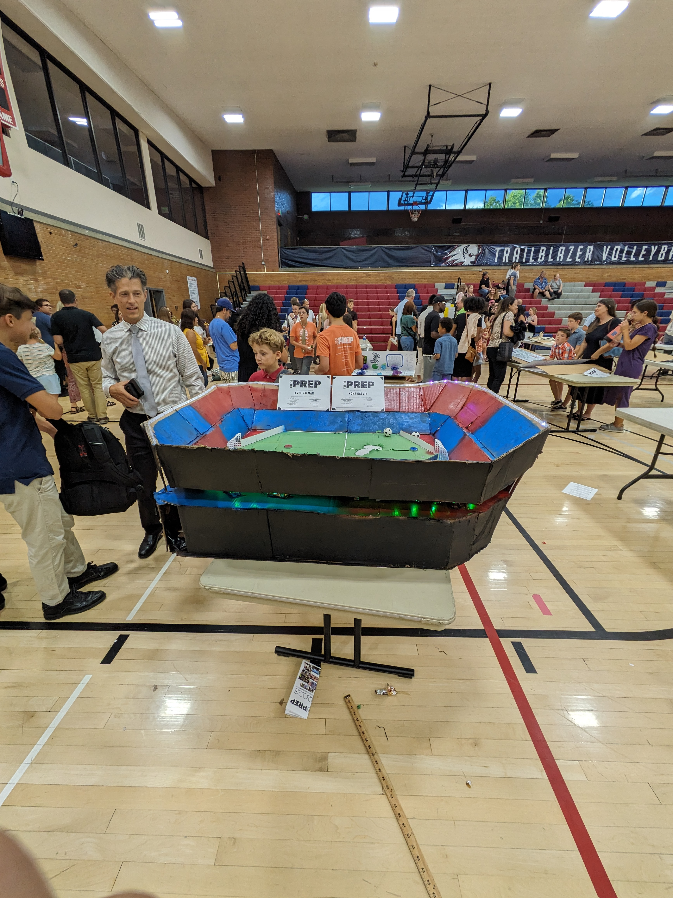

Milestone Series
This website is the culmination of a semester-long project at Utah Tech University. Throughout the development of this site, I have utilized advanced CSS Grid layouts to ensure a responsive design that works seamlessly across desktop and mobile devices. The project involved planning the Information Architecture, creating wireframes, and finally implementing the code using HTML5 and CSS3.
Software Engineering Goals
My technical journey involves multiple after school classes and collegiate courses about coding languages, and I am currently in development of a Roblox game using their coding languade Lua
Each project listed in my portfolio represents a specific challenge I've overcome. From handling responsive breakpoints to optimizing image assets for faster load times, I am constantly refining my workflow. I believe that being a great developer requires a balance of technical skill and creative problem-solving, a mindset I bring to every line of code I write. I also went as a summer camp student at Utah Tech Prep where we worked on projects related to STEM.
